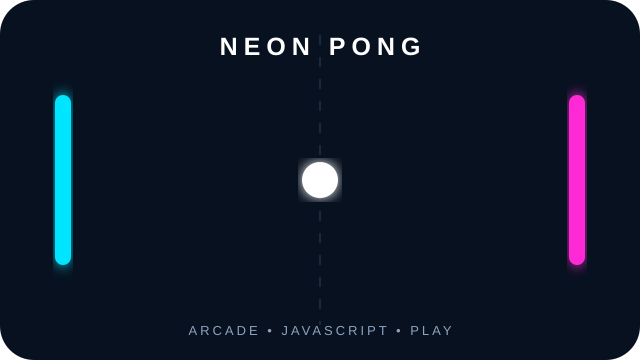
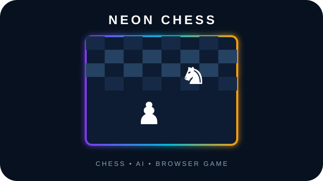

Python & Data
Analysis, cleaning, EDA and scientific workflows.
Python
Pandas
NumPy
SciPy
PySpark
I’m Shubham Kumar Jha — a Data Analyst and Python developer with a quantitative research background. I work across Python, SQL, statistics, BI, machine learning and scientific data.
My background in Physics taught me to work with large, noisy, multidimensional datasets, validate assumptions and communicate quantitative results clearly.
I’m carrying that mindset into business analytics, BI and data science: define the question, clean the data, test the assumption, visualise the pattern and explain what matters.
Turn ambiguous problems into measurable analytical questions.
Clean, check and cross-validate before trusting an output.
Use visuals and clear language for technical and non-technical audiences.
Focused on practical analytics, BI, ML and scientific computing.
Analysis, cleaning, EDA and scientific workflows.
Business questions, joins and analytical modelling.
Decision-ready dashboards and visual storytelling.
Predictive modelling with validation and interpretation.
Evidence-based analysis rather than dashboard decoration.
Reproducible development and lightweight deployment.
Business analytics, customer modelling and scientific machine learning.
End-to-end retail analytics across 8,399 order lines and 5,496 orders, covering cleaning, star-schema modelling, SQL analysis and BI reporting.
Customer analytics and cancellation prediction across 525,461 raw transaction rows.
Reproducible benchmark for flare-productivity classification and regression.
Transactional analysis using SQL and Python to turn order data into business insights.
Interactive applications deployed from my projects.
Interactive finance calculations presented through a dashboard-style interface.
Launch app ↗Interactive resume screening workflow focused on role matching and ATS-style analysis.
Launch app ↗Interactive job discovery and matching workflow built as a practical automation project.
Launch app ↗Two browser games I built outside my usual data stack.

Fast browser Pong with a neon arcade interface, scoring and responsive controls.

Interactive browser chess with an AI opponent and a neon visual style.
Analyse multi-instrument observational datasets in Python; automate ETL, validation, visualisation and reporting; apply EDA, correlation and time-series methods.
Processed high-volume observational data, built reusable Python pipelines, applied statistical/trend analysis and automated repetitive processing.
Solar active-region studies using HMI, AIA and GOES data with Python-based processing, visualisation and time-series analysis.
High-volume observational data and noisy measurements.
Independent checks and reproducible computational outputs.
Python, NumPy, SciPy, SunPy, Astropy and Linux workflows.
Technical findings translated into clear visuals and conclusions.
NIT Manipur
CGPA 8.62 / 10.0University of Delhi
CGPA 7.82 / 10.0Graduate Aptitude Test in Engineering
Qualified 2022Live portfolio visitor statistics.
For analytics, data science, BI, scientific computing or research opportunities.